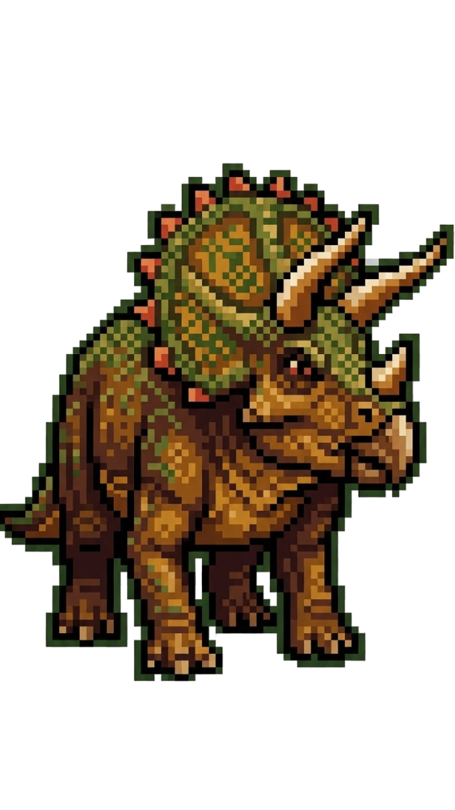

Titanes del Sur
Manifiesto

"Rescatando el pasado para que el futuro no sea una extinción anunciada".
En Titanes del Sur, no nos conformamos con mirar piedras viejas. Somos una ONG dedicada a la protección, estudio y difusión del patrimonio paleontológico de Argentina, con un enfoque que rompe con el molde tradicional del "museo aburrido".
Nuestros enfoques principales son:
- Custodia de Gigantes: Trabajamos activamente en la preservación de los yacimientos fósiles frente al avance de la urbanización descontrolada y el vandalismo.
- Eco-Paleontología: Entendemos que no hay fósiles sin territorio. Por eso, nuestra misión incluye la preservación del medioambiente actual.
- Educación con Volumen: Queremos bajar la paleontología de la estantería de cristal. Usamos la tecnología y el diseño para atraer a las nuevas generaciones.
¿Por qué hacemos esto? Porque somos una generación que entiende que el pasado nos da contexto, pero el futuro lo construimos nosotros. Vinimos a demostrar que la ciencia puede tener mucha onda.